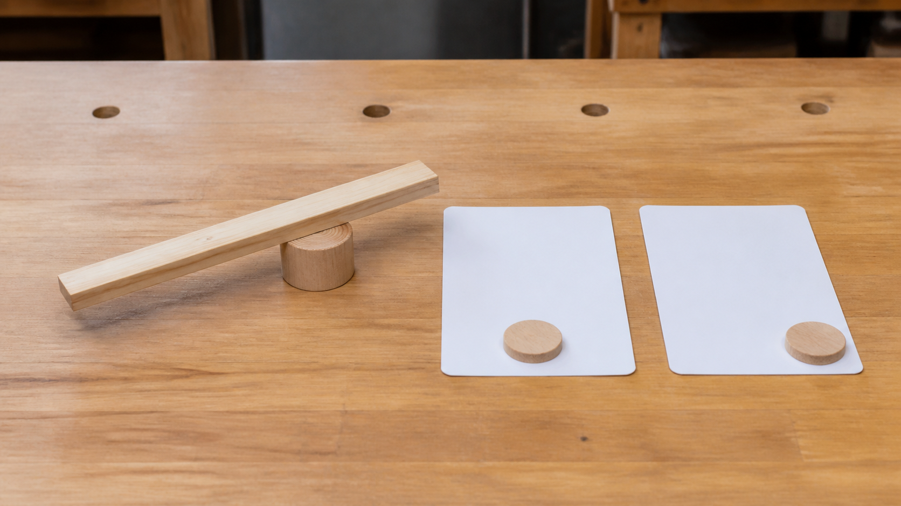
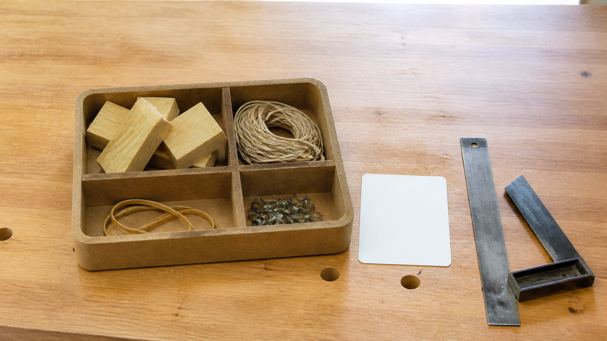

A system is just a list of parts.
A system explanation must show how the parts interact and how a change can affect the whole.
Module 1 of 10
A catapult is useful in this course because it lets you see an engineered system at work. You will investigate how parts interact, communicate a design, make and test a solution under teacher direction, and use evidence to explain your decisions. The aim is thoughtful engineering, not simply making something that moves.
Use this page to learn and prepare. Follow your teacher's demonstration, approved tools, local safety controls and testing instructions for every practical action.

Theory 1 of 3
An engineered system is a group of connected parts that work together for a purpose. Each part is called a component. A frame, moving arm and energy-storing component may all matter, but naming them is only the beginning. An engineer also asks how a change in one component affects the rest of the system. A strong component in the wrong position, for example, may still produce a weak or unreliable system.
It helps to draw a boundary around the system being studied. Inside the boundary are the components and relationships you are analysing. Outside it are people, surroundings and other systems that can still affect the result. For a classroom catapult, the designed object is one system, while teacher supervision and the controlled test setting are part of the wider situation. Defining the boundary keeps an explanation focused without pretending the object works alone.
Multiple-choice knowledge check
Choose an answer, check the feedback and try again if needed. Your checked progress is saved on this device.
0 of 4 questions checkedSaved on this device
Longer response
During a teacher-directed stability check, the frame shifts when another component moves. Explain why this observation must be investigated as a system relationship rather than blamed on one part without evidence.
Use the scaffold to explain and justify your thinking. No drawing is required. Your writing autosaves in this browser.
Formative learning evidence — not proof of submission.
Theory 2 of 3
A system can be traced through inputs, processes and outputs. Inputs are what enter the system, such as stored energy, materials and design information. Processes are the changes inside the system, including energy transfer and movement between components. Outputs are the results that can be observed or measured, such as movement, sound, vibration or test data. This pattern helps turn a complicated object into a sequence you can explain.
Feedback is information returned after an output is observed. It might show that a frame moved, the results varied, or a component did not stay aligned. Feedback is useful only when it guides the next decision. Engineers use it to decide whether to keep a feature, investigate a cause or make one controlled change. In this way, a design-and-test cycle becomes a loop rather than a one-way trip from idea to finished object.

Multiple-choice knowledge check
Choose an answer, check the feedback and try again if needed. Your checked progress is saved on this device.
0 of 4 questions checkedSaved on this device
Longer response
A teacher-directed check produces movement, sound and visible frame shift, and the repeated results vary. Trace this situation through input, process, output and feedback, then justify one evidence-led next decision.
Use the scaffold to explain and justify your thinking. No drawing is required. Your writing autosaves in this browser.
Formative learning evidence — not proof of submission.
Theory 3 of 3
The authorised brief asks you to design and construct a timber catapult using pine, hot glue, string, nails and elastic bands, and to complete a folio as well as the practical project. It sets a maximum planned pine length of 2400 mm. These facts are constraints: boundaries the solution must work within. A constraint is not automatically a judgement of quality. It tells you what must be respected while you develop a solution.
A criterion describes what success would look like and should be testable with evidence. Words such as good, strong or accurate are too vague by themselves because different people may interpret them differently. A useful criterion names an observable feature and the evidence that could support a judgement. Your teacher will confirm the approved project criteria and testing conditions. Your job is to connect each confirmed criterion to evidence rather than relying on personal preference.

Multiple-choice knowledge check
Choose an answer, check the feedback and try again if needed. Your checked progress is saved on this device.
0 of 4 questions checkedSaved on this device
Longer response
A concept uses only the authorised material types and plans less than 2400 mm of pine, but the designer says it will be “strong and accurate”. Explain what the brief evidence establishes, what remains vague, and what must be confirmed before the claim can guide testing.
Use the scaffold to explain and justify your thinking. No drawing is required. Your writing autosaves in this browser.
Formative learning evidence — not proof of submission.
Worked example
Vocabulary
Common traps
A system explanation must show how the parts interact and how a change can affect the whole.
Engineering feedback is useful information from observation or measurement that supports a decision.
Video learning · 1:47
Teach Engineering
Watch for: What problem and constraints must be defined before ideas are judged, and where can an engineering team loop back?
Source boundary: Design-process explanation only; no catapult recipe.

Use the adjacent evidence-led design-loop diagram. Identify the problem, users and authorised constraints, then mark one point where evidence could send a team back.
The privacy-enhanced player loads only when you choose it.
Applied Learning Activity
Practise turning a design brief into a system map and checking whether each component has a purpose.
Evidence to save: Completed system map plus the rewritten criterion, saved as formative practice.
Type the response, reasoning or record requested above. It autosaves in this browser.
Use the sentence frame: ‘The system takes ___ as an input, ___ changes or transfers it, and the output is ___.’
Add a second feedback source and explain which design decision it could change.
Higher-order evidence
Explain how a student-designed Catapult can be treated as an engineered system while staying inside the authorised brief.
Type your response. No drawing is required. It autosaves in this browser.